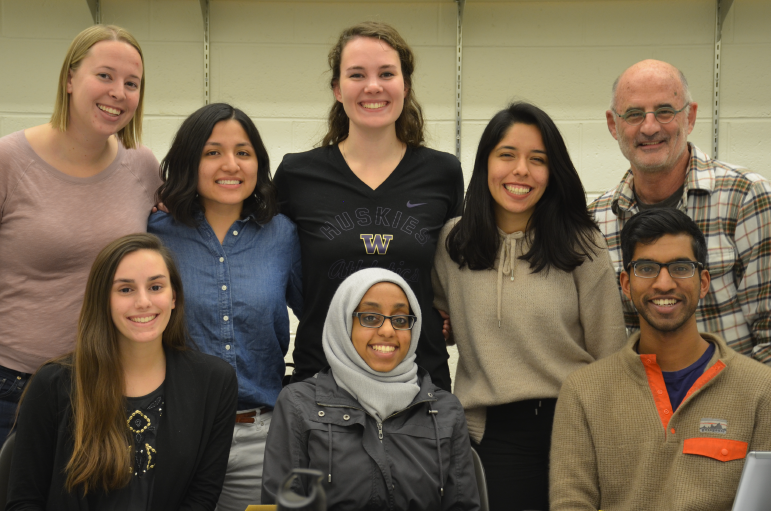

<!DOCTYPE>
<!--
This space was built by me, Michael Fernandes, to represent myself in both a professional and personal way. 

It would not be possible without the work done by:
Fullpagescroll.js ~(written by Álvaro Trigo)
animate.js ~ (written by  Daniel Eden)

Questions: mfern93@gmail.com
-->
 lang='en'>
	<head>
	<title> Michael Fernandes | Blog </title>
	<link rel="shortcut icon" type="image/x-icon" href="img/icon.png" />

	<meta name="viewport" content="width=device-width"/>

	<script src="https://ajax.googleapis.com/ajax/libs/jquery/3.2.1/jquery.min.js"></script>
	<link rel="stylesheet" href="https://fonts.googleapis.com/icon?family=Material+Icons">
	<link rel="stylesheet" href="https://www.w3schools.com/w3css/4/w3.css">

	<script src="js/main.js"></script>
	<script src="js/combined.min.js"></script>

	<link rel="stylesheet" type="text/css" href="css/combined.min.css">
	<link rel="stylesheet" type="text/css" href="css/style.css">


	<script async src="https://www.googletagmanager.com/gtag/js?id=UA-109443170-1"></script>
	<script>
	  window.dataLayer = window.dataLayer || [];
	  function gtag(){dataLayer.push(arguments);}
	  gtag('js', new Date());

	  gtag('config', 'UA-73790222-1');
	</script>

</head>


<body>
<header class="animated slow-animation">
	<div id='header-wrapper'>
		<ul>
			<a href="blog" class="nav-link"><li class="menu-projects">Blog</li></a>
			<a href="default" class="nav-link"><li class="menu-projects">Portfolio</li></a>
		</ul>
	</div>
</header>

<div class="content-wrapper">
	<div class="blog-spacer"></div>
	<h1 class="overview-title">Volunteer Work:Neah Bay Design Workshops</h1>
	
	<figcaption> The 2017 Neah Bay Alternative Spring Break Team, on our first ever meeting!</figcaption>
	<p class="small-exp">
		I try to be an active advocate for inclusion in tech. To do this I have taught classes, mentored younger students, and done outreach with the Human Centered Design and Engineering department at UW. My trip to Neah Bay in the spring 2017 was one of my proudest moments in this work and something that I hope all people passionate about diversity in the tech community could experience.
	</p>
	<hr class="division-line">
	<p class="small-exp">
		A typical college spring break involves a trip to mexico and an all inclusive hotel stay. My final spring break of college was quite the opposite but, much more memorable.
	</p>
	<p class="small-exp">
		UW pipeline attempts to inspire underprivliged K12 students to attend college by connecting them with current University of Washington students. 
	</p>


	<p class="small-exp">
		During the winter and spring of 2017, along with a group of 6 other students we built an alternative spring break program to teach design thinking to middle school students. During a stormy late april week we went to the northern point in the continental United States, Neah Bay, to teach the workshops to 100+ middle school students.
	</p>

	<p class="small-exp">
		The experience was unbeatable. I felt like I walked away learning as much from the middle schoolers we taught as they learned from us. 
	</p>

	<div class="small-exp">
			Read the day-to-day <a class="text-link" href="https://blogs.uw.edu/hcdeasb/"><b> blog</b></a> we kept while in Neah bay.
	</div>
	
	<figcaption class="caption-big">The ASB team eatting a meal together the Sunday before our workshops started</figcaption>

	
	<figcaption class="caption-big">Leading a class on our first day at Neah Bay Middle</figcaption>

	
	<figcaption class="caption-big">Students made interactable apps based using Marvel Prototyping a prototyping app for android.</figcaption>

	
	<figcaption class="caption-big">Students were teamed up in groups of 2-3 to complete a week long project</figcaption>

	
	<figcaption class="caption-big">Our students we're great! Sometimes you're just too cool for school though. </figcaption>

	
	<figcaption class="caption-big">Our 6th graders</figcaption>

	<video class="margined" width="100%" height="auto" controls>
	  <source src="img/volunteer/presentation.mp4" type="video/mp4">
	</video>
	<figaption>On our last day there, friday, students presented their projects in a science fair like format. This is about 8 projects of the 30 total</figcaption>
</div>


